receiver¶
- receiver … end_receiver¶
The receiver block defines the attributes of an electromagnetic receiver. Various sensor and communication objects make use of receivers.
receiver ... Antenna Commands ... antenna_ohmic_loss <db-ratio-value> antenna_pattern <pattern-name> antenna_pattern_table ... end_antenna_pattern_table attenuation_model <derived-name> attenuation ..... (attenuation is a synonym for attenuation_model) aux_data ... end_aux_data bandwidth <frequency-value> beam_tilt <angle-value> check_terrain_masking <boolean-value> check_transmitter_masking <boolean-value> terrain_masking_mode [ terrain_and_horizon | terrain_only | horizon_only ] detection_threshold <db-ratio-value> earth_radius_multiplier <value> effective_earth_radius <length-value> frequency <frequency-value> wavelength <length-value> instantaneous_bandwidth <frequency-value> internal_loss <db-ratio-value> noise_figure <db-ratio-value> noise_power <power-value> polarization [ horizontal | vertical | slant_45 | slant_135 | left_circular | right_circular | default ] polarization_effect [ horizontal | vertical | slant_45 | slant_135 | left_circular | right_circular ] <fraction> propagation_model <derived-name> receive_line_loss <db-ratio-value> end_receiver
Overview¶
Commands¶
- antenna_ohmic_loss <db-ratio-value>¶
This value, along with noise_figure and receive_line_loss, provides one method to determine the receiver noise power. It specifies the ohmic resistance of the antenna.
Default: 0 db (No loss)
Note
Specifying antenna_ohmic_loss or receive_line_loss triggers the use of an alternative method for computing the noise power (See Receiver Noise below for more information). For many uses internal_loss should be used to account for losses.
- antenna_pattern <pattern-name>¶
Specifies the name of the antenna gain pattern used by the receiver. The pattern must be defined using the antenna_pattern command.
Default: If antenna_pattern and antenna_pattern_table are omitted, they will be copied from an implicitly associated transmitter if defined. Otherwise the antenna gain will assumed to be a constant value of 1 (0 dB).
Note
If antenna_pattern and antenna_pattern_table are both specified, the last one specified is used.
- antenna_pattern_table … end_antenna_pattern_table¶
This command allows the definition of frequency-dependent or polarization- and frequency-dependent antenna gain pattern. Each named antenna pattern must be defined using the antenna_pattern command.
To define a table that is only frequency-dependent:
antenna_pattern_table frequency <frequency-value-1> <pattern-name-1> frequency <frequency-value-2> <pattern-name-2> frequency <frequency-value-n> <pattern-name-n> end_antenna_pattern_table
To define a table that is polarization- and frequency-dependent:
antenna_pattern_table polarization default frequency <frequency-value-1> <pattern-name-1> frequency <frequency-value-2> <pattern-name-2> frequency <frequency-value-n> <pattern-name-n> polarization <polarization-type> frequency <frequency-value-1> <pattern-name-1> frequency <frequency-value-n> <pattern-name-n> polarization <polarization-type> frequency <frequency-value-1> <pattern-name-1> end_antenna_pattern_table
When defining a polarization- and frequency-dependent table, the following rules must be noted:
Any ‘frequency’ entry that occurs before the first ‘polarization’ entry is assumed to apply to the ‘default’ polarization.
Any polarization that is not defined will use the definition for the ‘default’ polarization.
A ‘default’ polarization must be defined.
The process for determining gain uses the following algorithm:
If a polarization-dependent table is being used, the polarization of the received signal is used to locate the appropriate polarization-specific set of frequency entries. If there is not a corresponding entry for the polarization of the signal being received, the ‘default’ entry is used.
Frequencies greater than or equal frequency-value-m and less than frequency-value-m+1 will use pattern-name-m
Frequencies less than frequency-value-1 will use pattern-name-1.
Frequencies greater than or equal to frequency-value-n will use pattern-name-n.
Default: If antenna_pattern and antenna_pattern_table are omitted, they will be copied from an implicitly associated transmitter if defined. Otherwise the antenna gain will assumed to be a constant value of 1 (0 dB).
Note
If antenna_pattern and antenna_pattern_table are both specified, the last one specified is used.
Note
Entries will be sorted into increasing order of frequency.
- attenuation ….. (attenuation is a synonym for attenuation_model)¶
Specify the attenuation model. See the global command attenuation_model for more information about the available attenuation models and how to configure the models.
Default: none (No attenuation effects)
Note
This command is valid only for receivers which receive signals that do not originate from a transmitter
- aux_data … end_aux_data¶
Defines application-specific ‘auxiliary data’. See aux_data.
Default: No auxiliary data is defined.
- bandwidth <frequency-value>¶
- Specifies the bandwidth of the receiver. The receiver will accept signals whose frequency is between:
[ frequency - 1/2 bandwidth, frequency + 1/2 bandwidth ]
For frequency-hopping systems, the frequency should be set to the center of the frequency-hopping range, and the bandwidth should be set to encompass the range of frequencies. Note that WSF does not currently model the actual instantaneous frequency hopping.
Default: If omitted, the value of instantaneous_bandwidth will be used if it is non-zero. Otherwise a value of zero will be assumed.
Note
See Bandwidth Overlap Ratio below for more information.
Note
This command should not be used with WSF_PASSIVE_SENSOR as it implicitly generates the required data from its WSF_PASSIVE_SENSOR commands.
- beam_tilt <angle-value>¶
This is only to be used when defining systems that employ multiple beams (e.g., when using multiple beams in WSF_RADAR_SENSOR). It specifies the elevation angle of the beam center above the horizontal plane.
Default: If there is an implicitly associated transmitter (e.g., as in WSF_RADAR_SENSOR), the default will be the value of beam_tilt from the associated transmitter. Zero degrees is assumed if there is not an associated transmitter, or if beam_tilt was not specified in the associated transmitter
Note
the antenna_tilt or :command`_.articulated_part.pitch` commands should not be used with this command.
- check_terrain_masking <boolean-value>¶
Toggles the computation of terrain and horizon line of sight. This may be set to ‘off’ to either reduce computation or model sensors and comm devices which do not have line of sight limitations. By default, horizon masking is checked first, followed by a separate terrain masking check if terrain is loaded. The simple horizon masking check assumes a smooth bald spherical Earth and that any object below zero mean sea level is obscured. For subsurface sensors, horizon checking can be disabled by setting the terrain_masking_mode to terrain_only.
Default: on
- check_transmitter_masking <boolean-value>¶
Toggles the computation of terrain and horizon line of sight for transmitter checks. This may be set to ‘off’ to either reduce computation or model sensors and comm devices which do not have line of sight limitations, e.g. bistatic sensors.
Default: on
- terrain_masking_mode [ terrain_and_horizon | terrain_only | horizon_only ]¶
Sets the mode or type of masking checks to perform. By default, both horizon and terrain masking checks are enabled.
Default: terrain_and_horizon
- detection_threshold <db-ratio-value>¶
Specifies the signal-to-noise ratio above which the signal is declared to be detectable.
Default: 3 db
Note
Some systems (WSF_PASSIVE_SENSOR and WSF_RADAR_SENSOR in particular) use other criteria to determine if the received signal is sufficient for detection. This command is ineffective and should not be used in those cases.
- earth_radius_multiplier <value>¶
- effective_earth_radius <length-value>¶
Specify either the multiplier for Earth’s radius, or the effective earth radius, used to compute the effects of atmospheric refraction of radio-frequency signals.
This command is only effective for receivers in which an explicit transmitter is not the source of the signal to be detected.
Note
For commands where a transmitter is involved (such as in RF sensors or communications), this command should be specified in the transmitter block.
Note
The Earth’s radius is considered to be 6366707.019 meters.
Default: earth_radius_multiplier 1.0
- frequency <frequency-value>¶
- wavelength <length-value>¶
Specifies the center frequency to which the receiver is tuned. The receiver will accept signals whose frequency is between:
[ frequency - 1/2 bandwidth, frequency + 1/2 bandwidth ]
wavelength is an alternative mechanism for entering the frequency. The resulting frequency will be computed as:
frequency = speed-of-light / wavelength
- Default:
Varies. If the receiver is implicitly associated with a transmitter (such as monostatic radar system), the default will be the same as the frequency of the associated transmitter. For stand-alone receivers, a value must be specified.
Note
This command should not be used with WSF_PASSIVE_SENSOR as it implicitly generates the required data from its WSF_PASSIVE_SENSOR commands.
- instantaneous_bandwidth <frequency-value>¶
Specifies the instantaneous bandwidth of the receiver. For a frequency hopping or scanning system, this would be the bandwidth that is processed during an individual hop or scan point.
If noise_power is not explicitly supplied then this value is used as the bandwidth to calculate the noise power of the receiver as described in Receiver Noise below.
Default: If omitted, the value of bandwidth will be used if it is non-zero. Otherwise a value of zero will be assumed.
- internal_loss <db-ratio-value>¶
A single number can be used account for miscellaneous losses. This value occurs in the denominator:
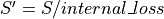
Default: 0 db (no internal loss)
- noise_figure <db-ratio-value>¶
This value, along with antenna_ohmic_loss and receive_line_loss, provide one method to specify the receiver noise power.
Default: 0 db.
Note
See Receiver Noise below for more information.
- noise_power <power-value>¶
Specifies the explicit noise power. This is one mechanism for specifying the receiver noise.
Note
See Receiver Noise below for more information.
- polarization [ horizontal | vertical | slant_45 | slant_135 | left_circular | right_circular | default ]¶
Specify the primary polarization of the signals which the receiving antenna will receive.
Default: default
- polarization_effect [ horizontal | vertical | slant_45 | slant_135 | left_circular | right_circular ] <fraction>¶
This command defines the fraction of a received signal of the specified polarization that will be processed. This allows one to override the default behavior when a receiver attempts to receive a signal that is of a different polarization that its primary polarization.
Note
If an antenna_pattern_table is declared which is a function of polarization, polarization_effects entries will be ignored for received signals whose polarization has a corresponding entry in the antenna_pattern_table that is not the default entry. In such a case, the antenna_pattern_table entry is assumed to contain any effects of polarization mismatch.
The default response is defined by the following table
rcvr/xmtr
horizontal
vertical
slant_45
slant_135
left_circular
right_circular
default
horizontal
1.0
0.0
0.5
0.5
0.5
0.5
1.0
vertical
0.0
1.0
0.5
0.5
0.5
0.5
1.0
slant_45
0.5
0.5
1.0
0.0
0.5
0.5
1.0
slant_135
0.5
0.5
0.0
1.0
0.5
0.5
1.0
left_circular
0.5
0.5
0.5
0.5
1.0
0.0
1.0
right_circular
0.5
0.5
0.5
0.5
0.0
1.0
1.0
default
1.0
1.0
1.0
1.0
1.0
1.0
1.0
- propagation_model <derived-name>¶
- propagation_model <base-name> …commands… end_propagation_model¶
Specify the propagation model. See global command propagation_model for more information about the available propagation models and how to configure the models.
Default: none (No propagation effects)
Note
This command is valid only for receivers which receive signals that do not originate from a transmitter
- receive_line_loss <db-ratio-value>¶
This value, along with antenna_ohmic_loss and noise_figure, provide one method to specify the receiver noise power. It specifies the RF component line loss between the antenna and the receiver.
Default:: 0 db (No loss)
Note
Specifying antenna_ohmic_loss or receive_line_loss triggers the use of an alternative method for computing the noise power (See Receiver Noise below for more information). For many uses internal_loss should be used to account for losses.
Bandwidth Overlap Ratio¶
During the course of a one-way interaction involving a transmitter and a receiver (e.g., a communications attempt or a passive sensor detection attempt), the frequency and bandwidth of both are used to determine the amount of frequency overlap. This produces a ‘bandwidth overlap ratio’, which is the amount of the transmitted frequency spectrum that is within the bandwidth of the receiver.
Note
In two-way interactions such at those involving radars, it is assumed that the transmitter and receiver are matched. The bandwidth effect ratio is assumed to 1.
Note
It may appear that the instantaneous_bandwidth should be used for the receiver bandwidth. However, WSF does not model the temporal aspects of scanning or frequency-hopping systems, so it is necessary to consider the scanning or hopping bandwidth.
Let:
- 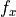
The frequency from the transmitter
The bandwidth from the transmitter
- 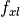
The lower bound of the transmitter frequency spectrum.
- 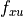
The upper bound of the transmitter frequency spectrum.
- 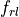
The lower bound of the receiver frequency spectrum.
- 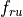
The upper bound of the receiver frequency spectrum.
- 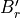
The effective receiver bandwidth
- 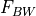
The resulting bandwidth overlap ratio in the range [0..1].


Then calculate the bandwidth overlap ratio is as follows:
Calculate the extent of the transmitter frequency spectrum:
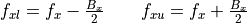
Determine the effective receiver bandwidth.
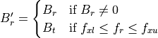
The second case is to handle the situation where the receiver bandwidth was not specified. This is a simplification which says that as long as the specified receiver frequency is within the transmit frequency spectrum, the receiver and transmitter are assumed to be ‘matched.’
Calculate the extent of the receiver frequency spectrum:
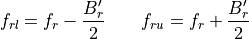
Determine the bandwidth overlap ratio
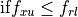
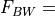
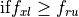
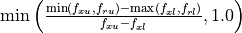
Receiver Noise¶
The receiver noise can be determined in several ways as described below. The following definitions apply to the equations.
Boltzmann’s constant (1.3806505E-23 J/deg-K)
- 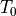
Nominal ambient temperature (290 deg-K)
- 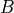
The (instantaneous) bandwidth of the receiver.

The process for computing the receiver noise power is as follows. The value from the first step whose conditions for use are satisfied will be used.
If WSF_RADAR_SENSOR was specified, the noise power is computed. In these cases the receiver noise is considered a variable that needs to be determined. Using the associated power and frequency from the transmitter and whatever other data is provided (either explicitly or by default), the radar range equation is used to compute a received signal power. The noise power is then computed using:
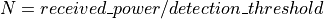
If noise_power was specified, use the defined value.
If the bandwidth cannot be determined, use the value of -160 dBW.
The bandwidth of the receiver will be defined to be the explicitly specified value from instantaneous_bandwidth or bandwidth. If none of the values are defined then the bandwidth cannot be determined.
If noise_figure was specified and both antenna_ohmic_loss and receive_line_loss were omitted, compute the noise power using:
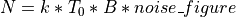
Compute the noise power using the algorithm defined in “Radar Range Performance”, Lamont V. Blake, 1986, Artech House, Inc., Chapter 4.
Sky Noise temperature contribution due to the antenna (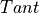 = sky temperature due to antenna pointing angle).:
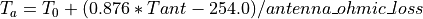
Noise temperature contribution due to receive line loss:
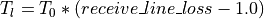
Noise temperature contribution due to the receiver:
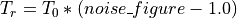
Total system temperature:

The noise power is then computed as:
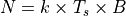
See Also¶
Military Specific¶
Note
WSF_LADAR_SENSOR, WSF_OTH_RADAR_SENSOR and WSF_SAR_SENSOR handle receiver noise the same as WSF_RADAR_SENSOR does, as specified in the section above.
receiver ... electronic_protect ... end_electronic_protect end_receiver
- electronic_protect … end_electronic_protect¶
A block that defines the Electronic Protection (EP) capabilities within the receiver. See electronic_protect for the available commands.
Default No electronic protect capabilities.